The moving-boundary Navier-Stokes problem discussed in this document is a "warm-up" problem for the classical fluid-structure interaction problem of flow in a 2D collapsible channel. Here we compute the flow through a 2D channel in which part of one wall is replaced by a moving "membrane" whose motion is prescribed. In another example, we will demonstrate how easy it is to extend the driver code for the current problem to a fluid-structure interaction problem in which the "membrane" is represented by an elastic beam that deforms in response to the fluid traction.
We note that the (FSI version of the) problem considered here was analysed in much more detail in
- Jensen, O.E. & Heil, M. (2003) High-frequency self-excited oscillations in a collapsible-channel flow. Journal of Fluid Mechanics 481 235-268. (pdf preprint) (abstract)
where a detailed discussion (and an asymptotic analysis) of the flow-structures described below may be found.
The problem
The figure below shows a sketch of the problem: Flow is driven by a prescribed pressure drop through a 2D channel of width 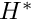 and total length 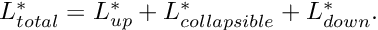 The upstream and downstream lengths of the channel are rigid, whereas the upper wall in the central section performs a prescribed oscillation. The shape of the moving segment is parametrised by a Lagrangian coordinate, 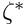 , so that the position vector to the moving wall is given by 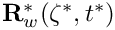 . 
Sketch of the problem. We scale all lengths on the channel width, , use the average velocity through the undeformed channel, The flow is then governed by the unsteady Navier-Stokes equations 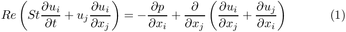 and the continuity equation 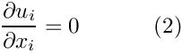 with 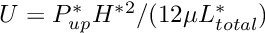 , subject to the following boundary and initial conditions:
|
 , to scale the velocities, and use 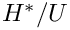 to non-dimensionalise time. (As usual, we employ asterisks distinguish dimensional parameters from their non-dimensional equivalents.)
, to scale the velocities, and use 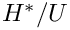 to non-dimensionalise time. (As usual, we employ asterisks distinguish dimensional parameters from their non-dimensional equivalents.) .
.We consider a wall motion that deforms the initially "flush" wall into a parabolic shape. We denote the non-dimensional
amplitude of the oscillation by 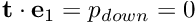 and its period by 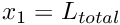 , and parametrise the position vector to a point on the wall by the Lagrangian coordinate 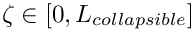 as
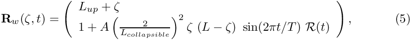
where the "ramp" function
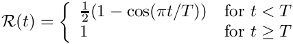
is used to facilitate the start-up of the simulation from the initial condition of steady Poiseuille flow. 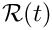 provides a "smooth" startup of the wall motion during the first period of the oscillation.
The results
The figure below shows a snapshot, taken from the animation of the computational results. The first four figures show (from top left to bottom right) "carpet plots" of the axial and transverse velocities, the axial component of the perturbation velocity  , and the pressure distribution. The 2D contour plot at the bottom of the figure shows a contour plot of the pressure and a few instantaneous streamlines.
, and the pressure distribution. The 2D contour plot at the bottom of the figure shows a contour plot of the pressure and a few instantaneous streamlines.
The figures illustrate the flow structures identified in Jensen & Heil's (2003) asymptotic analysis of 2D channel flows that are driven by high-frequency, small-amplitude oscillations of a finite section of one of their walls: The flow consists of oscillatory axial "sloshing flows", superimposed on the mean Poiseuille flow that is driven by the applied pressure drop. During phases when the wall moves inwards (outwards) the flow generated by the moving wall decelerates (accelerates) the flow in the upstream region as the wall "injects" fluid into ("sucks" fluid out of) the domain. Conversely, in the downstream region the flow generated by the wall adds to the pressure-driven mean flow during phases when the wall moves inwards. This is shown most clearly in the plot of the axial velocity perturbation. In the plots shown above, the wall moves outwards and the axial perturbation velocity is positive (i.e. in the direction of the pressure-driven mean flow) in the upstream region, and negative in the downstream region. This is also shown in the time-traces of the velocities at two control points in the in- and outflow cross-sections, shown in the figure below:
Finally, we comment that the plot of the perturbation velocities confirms the two-layer structure of the sloshing flows predicted in the asymptotic analysis. The sloshing flow comprises a blunt core flow region in which the flow is dominated by inertial effects while thin Stokes layers develop near the wall. Within these layers, the fluid viscosity reduces the axial velocity to zero. The carpet plot of the pressure shows that the pressure distribution is dominated by the variations induced by the oscillatory sloshing flows. For a detailed discussion of the flow structure we refer to Jensen & Heil (2003).
Overview of the driver code
Overall, the driver code is very similar to codes developed for other moving-boundary Navier-Stokes problems, such as the driver code used to simulate the flow inside an oscillating ellipse. The present code is slightly lengthier because of the traction boundary conditions which we impose by attaching traction elements to the upstream end of the mesh. (Refer to the traction-driven Rayleigh problem for a more detailed discussion of this technique.) Also, as discussed in another example, the traction elements must be removed/re-attached before/after every mesh adaptation.
The domain is discretised by the
CollapsibleChannelMesh which employs the CollapsibleChannelDomain to provide a MacroElement - based representation of the deforming domain in terms of the GeomObject that describes the motion of the "collapsible" section of the wall (boundary 3). The sketch below illustrates the topology and the mesh deformation: As the wall deforms, the
boundaries of the MacroElements in the "collapsible" part of the Domain follow the wall motion.

The no-slip boundary conditions on the moving wall are applied as in the oscillating ellipse problem, by executing the function FSI_functions::apply_no_slip_on_moving_wall(...) in Problem::actions_before_implicit_timestep() for all nodes that are located on boundary 3.
The following sections provide a complete annotated listing of the driver code. Most functions should already be familiar from previous examples and you may want to skip straight to the Comments and Exercises.
The moving wall
As usual, we represent the moving wall as a GeomObject and define its shape by implementing the pure virtual function GeomObject::position(...). The arguments to the constructor specify the Eulerian coordinates of wall's left end, its undeformed length, the amplitude of the oscillations, , and the period of the oscillations . We also pass the pointer to a Time object to the constructor and store it in a private data member, to allow the position(...) functions to access the current value of the continuous time. The amplitude of the wall motion, and the period of its oscillations are stored as private data members, accessible via suitable member functions.
Since the GeomObject represents a moving (i.e. time-dependent) boundary, we implement both versions of the GeomObject::position(...) function: The "unsteady" version computes the position vector at the t -th previous timestep.
The version without additional argument computes the position vector at the present time:
Finally, here are the various private data members:
[Note: We note that the OscillatingWall class allows the wall shape to be slightly more complicated than required by (5). If the parameter B is set to a non-zero value, the material points on the wall also undergo some horizontal displacement. We will use this capability in one of the exercises in section Comments and Exercises.]
Namespace for the "global" physical variables
As usual, we define the problem parameters in a namespace and assign default values that can be overwritten if required.
We also implement the function that defines the prescribed (axial) traction at the inflow boundary.
The driver code
As with most previous time-dependent codes, we use command line arguments to indicate if the code is run during oomph-lib's self-test. If any command line arguments are specified, we use a coarser discretisation and perform fewer timesteps.
After storing the command line arguments, we choose the number of elements in the mesh, set the lengths of the domain and choose the amplitude and period of the oscillation. The parameter values are chosen such that the wall motion resembles that in the FSI simulations shown in Fig. 5 of Jensen & Heil (2003).
We set the (non-dimensional) upstream pressure to 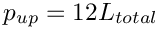 , so that in the absence of any wall oscillation, the steady flow through the channel is Poiseuille flow, 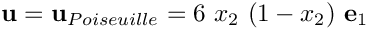 ; see Comments and Exercises.
Next, we specify the output directory and build the problem with refineable 2D Crouzeix Raviart Elements.
Next we set up the time-stepping parameters for a simulation of three periods of the oscillation, performed with 40 timesteps per period. Fewer timesteps are performed if the code is run in self-test mode.
We initialise the timestepper and set the initial conditions before documenting the initial condition.
Next we set the error targets for the adaptive mesh refinement; a smaller target error is used when the code is run in self-test mode to ensure that some mesh refinement is performed during the first few timesteps.
The timestepping loop itself is identical to that used in other time-dependent driver codes with adaptive mesh refinement. During the first timestep, an arbitrary number of spatial adaptations may be performed, as the initial condition can be re-assigned on the refined mesh. (This is indicated by setting the boolean flag first to true when calling the spatially adaptive, unsteady Newton solver.) During subsequent timesteps the need to interpolate the history values onto the refined mesh limits the benefits of repeated mesh adaptations and we limit the number of spatial adaptations per timestep to 1.
The problem class
As usual, we template the problem class by the element type and provide an access functions to the "bulk" Navier-Stokes mesh.
No action is needed before or after solving, so the pure virtual functions Problem::actions_before_newton_solve() and Problem::actions_after_newton_solve() can remain empty.
We will use the function Problem::actions_before_implicit_timestep() to update the no-slip boundary conditions on the moving wall before each timestep and employ Problem::actions_before_adapt() and Problem::actions_after_adapt() to wipe and rebuild the mesh of prescribed traction elements each time a mesh adaptation is performed. The functions Problem::doc_solution(...) and Problem::set_initial_condition() will do what they say...
The private helper functions create_traction_elements(...) and delete_traction_elements() attach and remove the traction elements from the upstream boundary of the "bulk" Navier-Stokes mesh.
The private member data contains the geometric parameters as well as the pointer to the GeomObject that describes the moving wall.
Further private member data includes pointers to the "bulk" mesh and the surface mesh that contains the traction elements, and pointers to control nodes in the in- and outflow cross-sections.
The problem constructor
The arguments passed to the problem constructor specify the number of elements and lengths of the various parts of the channel, as well as the amplitude and period of the wall oscillations.
We store the parameters in the problem's private member data and increase the maximum permitted residual for the Newton iteration.
We continue by building the BDF<2> timestepper and pass a pointer to it to the Problem
Next, we create the GeomObject that represents the oscillating wall, and pass a pointer to it to the constructor of the CollapsibleChannelMesh
We create a second mesh to store the applied traction elements and attach them to the inflow boundary (boundary 5) of the "bulk" fluid mesh, using the function create_traction_elements(...). Both submeshes are then combined into a global mesh.
We create the spatial error estimator for the fluid mesh and loop over the various elements to set the pointers to the relevant physical parameters, first for the Navier-Stokes elements in the bulk mesh,
and then for the applied traction elements in the surface mesh:
We apply the boundary conditions and pin the velocity on the relevant mesh boundaries:
- both axial and transverse velocities are pinned along the bottom and the top boundaries (boundaries 0, 2, 3 and 4).
- the transverse velocities are pinned along the in- and outflow boundaries (boundaries 1 and 5).
We select two control nodes on the inflow and outflow boundaries to document the velocities.
Finally, we set up the equation numbering scheme.
Post processing
The function doc_solution(...) documents the results, and records the time-trace of the axial velocities at the two control nodes and the position of the midpoint on the oscillating wall.
Creation of the traction elements
The creation of the applied traction elements follows the usual pattern, explained in detail elsewhere: We loop over the elements in the fluid mesh that are adjacent to the specified mesh boundary, and build the corresponding traction elements, which are added to the surface mesh.
Delete the traction elements
Since the "bulk" elements that the applied traction elements are attached to may disappear during mesh adaptation, we delete all traction elements before the adaptation and re-attach them afterwards. The deletion is performed by the following member function. Note that the surface mesh that contains the traction elements is not deleted, as this would also delete the associated nodes which are shared with the corresponding bulk elements.
Apply the initial conditions
Initial conditions are applied as usual. We start by confirming that the timestepper is a member of the BDF family and therefore operates on history values that represent the solution at previous timesteps. We assign the previous nodal positions and velocities at all nodes, assuming that for 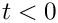 the wall is at rest and the flow field is given by steady Poiseuille flow.
Actions before the timestep
Before each timestep, we update the nodal positions in the fluid mesh, and apply the no-slip condition to each node on mesh boundary 3.
Actions before the mesh adaptation
As discussed above, we delete the applied traction elements before performing any mesh adaptation and then rebuild the global mesh.
Actions before the mesh adaptation
Once the mesh has been adapted, we (re-)create the prescribed traction elements and rebuild the global mesh. We also have to pass the pointers to prescribed traction function to the newly created traction elements.
Comments and Exercises
- Check the non-dimensionalisation of the governing equations and confirm that a (non-dimensional) upstream pressure 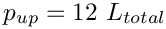 is required to drive the steady Poiseuille flow specified by (3) through the static, undeformed channel. Use this to "validate" (well, "plausibility-check", anyway...) the code by setting the amplitude of the wall oscillation to zero.
- Double the upstream pressure while keeping the amplitude of the wall oscillation at zero and confirm that the flow accelerates until it (asymptotically) approaches Poiseuille flow with twice the initial flowrate as 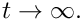
- The flow field has the largest velocity gradients in the thin Stokes layers near the wall, causing the automatic mesh adaptation procedure to refine the mesh pre-dominantly in these regions. To facilitate the resolution of such layers the
CollapsibleChannelDomainandCollapsibleChannelMeshallow the specification of a mapping [0,1] -> [0,1] that redistributes the nodal points in the vertical direction so that the elements near the wall become more squashed. By default the "boundary-layer squash function" is the identity but it may be overloaded by specifying a function pointer to an alternative function. The driver code already includes a demonstration of this capability which may be activated by compiling the driver code with-DUSE_BL_SQUASH_FCT. This activates the code segmentin the Problem constructor. The "squash function" used for this example is defined in the following namespace:#ifdef USE_BL_SQUASH_FCT// Set a non-trivial boundary-layer-squash function...Bulk_mesh_pt->bl_squash_fct_pt() = &BL_Squash::squash_fct;// ... and update the nodal positions accordinglyBulk_mesh_pt->node_update();#endifWith this function 50% of the nodal points in the vertical direction are located within two boundary-layer regions which occupy 2 x 10% of the channel's width. The figure below shows the element shapes for a (coarse) initial mesh that is used in the validation run, with and without the boundary-layer squashing function://==========start_of_BL_Squash =========================================/// Namespace to define the mapping [0,1] -> [0,1] that re-distributes/// nodal points across the channel width.//======================================================================namespace BL_Squash{/// Boundary layer widthdouble Delta=0.1;/// Fraction of points in boundary layerdouble Fract_in_BL=0.5;/// \short Mapping [0,1] -> [0,1] that re-distributes/// nodal points across the channel width{// Default returndouble y=s;if (s<0.5*Fract_in_BL){y=Delta*2.0*s/Fract_in_BL;}{}else{y=(1.0-2.0*Delta)/(1.0-Fract_in_BL)*s+}return y;}}// end of BL_Squash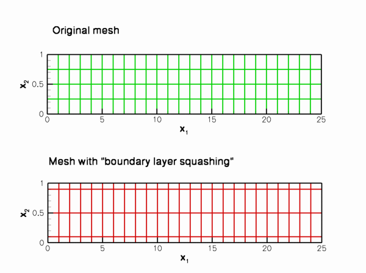Confirm that if this "squashing function" is applied to the mesh that is used during the non-self-test runs (this mesh has 16 x larger number of elements than the meshes shown above), the quality of the computed solution improves so much that no subsequent mesh adaptation is required.Coarse initial meshes with and without the boundary-layer squash function. - The flow structures observed during the small-amplitude oscillations (shown in the animation at the beginning of this document) are in perfect agreement with the structures predicted by Jensen & Heil's (2003) asymptotic analysis. As an exercise, increase the amplitude of the wall oscillation (to 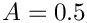 , say) to confirm that the flow-structure predicted by the theory (which is strictly applicable only for small-amplitude
oscillations) also provides an excellent description of of the system's behaviour during large-amplitude oscillations with more complicated wall motions.
For instance, the figure below shows a snapshot of the the animation of the computational results for an oscillation in which the wall undergoes a more complicated motion, described by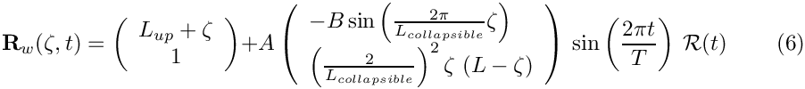
for 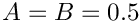 . For these parameter values, the wall performs a large-amplitude oscillation in the course of which material particles are not only displaced vertically but also in the horizontal direction. Nevertheless, the flow generated by the moving wall may be described as arising from the superposition of Poiseuille flow and an axial sloshing motion, the latter obviously having a much larger amplitude than in the previous case. The
animation of the flow field shows that more complex local flow features develop briefly whenever the flow separates from the wall. However, the appearance of these features does not change the macroscopic behaviour of the flow. Flow field for a large-amplitude wall motion. Re=ReSt=50; A=B=0.5; T=0.45.
Flow field for a large-amplitude wall motion. Re=ReSt=50; A=B=0.5; T=0.45.
Source files for this tutorial
- The source files for this tutorial are located in the directory:
demo_drivers/navier_stokes/collapsible_channel/ - The driver code is:
demo_drivers/navier_stokes/collapsible_channel/collapsible_channel.cc
PDF file
A pdf version of this document is available.